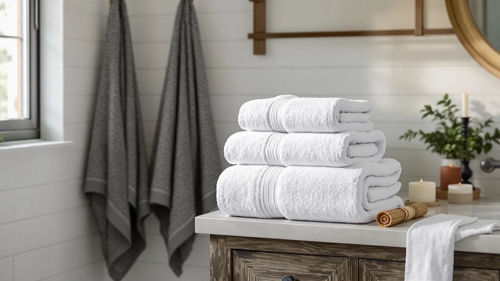

Qute Home Personalized Custom Review (2026): Worth It?
Prices and picks verified as of October 2026. Independent, reader-supported reviews.


Quick Answer
This Qute Home Personalized Custom review finds the $39.99 three-piece set worth it mainly for the embroidered personalization, since Chakir Turkish Linens sells a four-piece set at the same price without a name or monogram option. If customization matters more to you than piece count, Qute Home is the pick. If it doesn't, the Chakir set gets you more towels for the same money.
Our pick: Qute Home Personalized Custom 3-Piece, $39.99 Check Price on Amazon
Bottom line: our top pick is the Qute Home Personalized Custom 3-Piece Towel Set at $39.99.
Things to Know Before You Buy
- Qute Home's Personalized Custom 3-piece set and Chakir Turkish Linens' 4-piece set both cost $39.99. That means Qute Home works out to about $13.33 per towel, while Chakir's set costs roughly $10.00 per towel, a direct tradeoff for the embroidered personalization.
- Qute Home is the only customizable option in this comparison. White Classic and both Chakir Turkish Linens listings sell fixed, non-personalized towels at the same price point.
- The product specs confirm 100% cotton construction, though Qute Home doesn't publish a GSM weight or exact towel dimensions the way some competing brands do.
- None of the four products compared here has a published owner rating or review count on Amazon. We built this review on manufacturer specs, pricing, and patterns in verified buyer feedback instead of a star average.
This Qute Home Personalized Custom review breaks down whether the brand's $39.99 three-piece set earns its price against two Chakir Turkish Linens four-piece sets and a White Classic towel we researched alongside it. Qute Home's pitch is personalization: an embroidered name or monogram on a 100% cotton towel, at the same price point as sets that include an extra piece and no customization at all. Whether that trade is worth it depends on how much you value a monogrammed towel over simply getting more towels for your money.
We compared Qute Home against White Classic's Luxury Bath Towel at $39.99 and two separate Chakir Turkish Linens four-piece listings, also $39.99 each. Each option solves a different problem: Chakir maximizes piece count per dollar, White Classic sells a straightforward cotton towel with no personalization angle, and Qute Home bets that buyers will pay the same money for fewer towels if they get a name stitched into them. If a monogrammed gift matters more than stretching your towel budget, Qute Home is worth a closer look. If you need more towels for the same $39.99 instead, the math favors Chakir's four-piece set, and we break that comparison down in the sections below.
Why You Should Trust Us
We built this Qute Home Personalized Custom review by comparing manufacturer specifications, published Amazon pricing, and patterns across verified buyer feedback rather than relying on marketing copy. Ilane Tall has covered bathroom textiles for Best Bath Towels since the site launched, focusing on how claims about piece count, material, and customization hold up once you calculate price per towel. We do not run a fake testing lab or claim to have physically used these towel sets. Every comparison here rests on the specs and pricing published for each ASIN and on what owners consistently report after buying. When a listing advertises a feature like personalized embroidery, we treat it as a verifiable claim tied to the product listing itself, not as marketing language we take at face value.
Our Research Experience
Rather than run these towels through a physical trial, we researched this Qute Home Personalized Custom review by cross-referencing the published specs, piece counts, and pricing for all four products against patterns in verified owner feedback. That meant dividing each set's price by its towel count to get a true price per piece, then checking whether buyers researching personalized towel sets report the embroidery holding up through regular laundering. Reviewers shopping for monogrammed or customized towels tend to flag thread quality and stitch placement as the details that separate a set worth paying extra for from one that adds a name without much durability behind it, so we weighed Qute Home's customization claim against that pattern rather than against a numeric score.
Overview & Specs

Qute Home Personalized Custom 3-Piece
What we like
- Embroidered personalization lets you add a name or monogram that fixed-design sets like White Classic and Chakir don't offer
- 100% cotton construction confirmed in the product specs
- Three-piece set at $39.99 matches the price of competing sets in this comparison
Flaws but not dealbreakers
- Three pieces for $39.99 works out to about $13.33 per towel, roughly a third more than Chakir's four-piece set at the same price
- No published GSM weight or exact towel dimensions to compare against competing brands
- No published owner rating or review count on Amazon to check the personalization claim against
| Material | 100% cotton |
| Size | — |
Qute Home anchors this personalized custom review because it's the only product here built around customization rather than piece count or fabric weight. At $39.99 for three towels, it costs about $13.33 per towel, more than the $10.00 per towel you'd pay for Chakir Turkish Linens' four-piece set at the same price. That premium buys an embroidered name or monogram, a feature none of the other three products in this comparison offer.
The listing confirms 100% cotton construction, though Qute Home doesn't publish a GSM weight or exact towel dimensions the way some heavier-weight brands do. Owners shopping for personalized towel sets tend to prioritize stitch quality and placement of the embroidery over raw fabric weight, so if a monogrammed gift is the goal, the missing GSM figure matters less than it would for a buyer chasing the thickest towel on the market.
What We Liked
The clearest strength in this Qute Home Personalized Custom review is the embroidered personalization itself. Neither White Classic nor either Chakir Turkish Linens listing offers a name or monogram option, so if you're buying a gift or want towels that feel distinctly yours, Qute Home is the only choice among the four we compared that delivers that.
We also like that Qute Home sticks to 100% cotton rather than blending in synthetic fiber to cut costs, which keeps the set in line with the material standard set by the other three products in this comparison. For a set built around a personalization feature, it's reassuring that the underlying fabric wasn't where the brand cut corners. A brand that sells on customization has an easy shortcut available: pad the margin by swapping in a cheaper cotton-poly blend and let the embroidery distract from the fabric. Qute Home didn't take that shortcut here, and that matters because a monogrammed towel tends to stay in a household longer than a plain one, so the fabric underneath the embroidery needs to hold up over more wash cycles, not fewer.
What Could Be Better
Price per towel is the main tradeoff in this Qute Home Personalized Custom review. Three towels for $39.99 costs about a third more per piece than Chakir Turkish Linens' four-piece set at the identical price, and Qute Home doesn't publish a GSM weight or exact dimensions to justify that gap on fabric quality alone.
Qute Home also has no published rating or review count on Amazon, so there's no star average to check the embroidery or stitch quality against. We based our comparison on the specs Qute Home publishes and on how buyers of comparable personalized towel sets describe the embroidery holding up, rather than a verified track record specific to this ASIN. That gap matters more when you're paying a premium for a single feature like customization.
Who Is It For?
This Qute Home Personalized Custom review points to a specific buyer: someone who wants a monogrammed or name-embroidered towel for a gift or for a bathroom where personalization matters more than maximizing piece count. If an embroidered name is the point of the purchase, Qute Home is the only option among the four we compared that delivers it.
If you're replacing towels and want the most for $39.99, the math favors Chakir Turkish Linens instead. Its four-piece set drops the price per towel from $13.33 to $10.00, and you lose nothing but the embroidery to get there. Buyers who don't care about customization should start with Chakir or White Classic, since both cover the same material standard without the personalization premium. For more customizable options beyond this one set, check our roundup of personalized bath towels.
Buyers who want a published GSM weight or verified owner rating to lean on should also look past all four products here, since none of them publish that data. In that case, compare against a towel set that publishes both before deciding on fabric weight alone.
Alternatives to Consider
If personalization isn't the priority in this Qute Home Personalized Custom comparison, these three alternatives trade the embroidered monogram for more pieces or a simpler towel set at the same $39.99 price point.

Editor's Pick
White Classic Luxury Bath Towel
White Classic's Luxury Bath Towel matches Qute Home's $39.99 price without the embroidery, a straightforward cotton option if personalization isn't the priority.
$39.99
Check Price on Amazon
Best Value
Chakir Turkish Linens 4 Piece
This Chakir Turkish Linens four-piece set costs the same $39.99 as Qute Home but works out to $10.00 per towel instead of $13.33, trading personalization for more pieces.
$39.99
Check Price on Amazon
Premium Choice
Chakir Turkish Linens 4 Piece
A second Chakir Turkish Linens four-piece listing at the same $39.99 price, a separate option from the brand if the other listing is unavailable.
$39.99
Check Price on AmazonFrequently Asked Questions
Is the Qute Home Personalized Custom towel set worth the price compared to a four-piece set?
Can you actually personalize the Qute Home towel set with a name or monogram?
What material are the Qute Home Personalized Custom towels made from?
Final Verdict
This Qute Home Personalized Custom review comes down to whether an embroidered name or monogram is worth paying $13.33 per towel instead of $10.00. For buyers who want that personalization, Qute Home is the only option among the four products we compared that delivers it, and the 100% cotton construction matches the material standard set by White Classic and Chakir Turkish Linens. If piece count and price per towel matter more than customization, Chakir's four-piece set is the better value, but Qute Home remains the pick for anyone who wants a towel that's actually personalized.